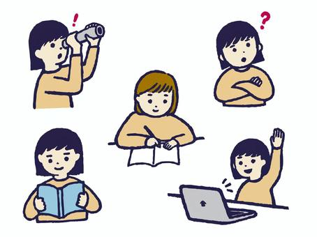

【今後】高校生ブロガーの頭の中【ep2】
こんにちは。ぽてっとです。
今回のロードマップを下記にまとめました。
- 1：今後の方向性
- 2：学ぶべきもの
- 3：ゲームを作る？
1：今後の方向性
簡単に僕が現在の段階で頭に思い描いていることをアウトプットしていきます！
したいことは、2つあります。
①：wordpressのテーマ制作
wordpressでテーマを作るには、PHPという言語が必要になってきます。
難しいですが、少しずつできるようになっていきます。
②：unityでのゲーム制作
unityは、c#という言語を使います。
c#をぼちぼち勉強していこうと思います。
2：学ぶべきもの

- ①：progate【java】
- ②：unityでのゲーム制作
- ③：wordpressテーマ制作
①：progate【java】
progateというサービスを使って、javaを勉強します。
オブジェクト指向というものが大事になってくるので、これを理解するまで繰り返そうと思います。
②：unityでのゲーム制作
javaの勉強が終わったら、unityの勉強をしようと思います。
unityでは、c#が必要になってくるので、c#とunityの画面操作を覚えたいと思います！
③：wordpressテーマ制作
今ブログの運営の仕方としては、自分でファイルを管理してcodeを書いて運営しているので、少し大変です。なので、wordpressで自分のテーマを作って、移行しようと思います。
javaやunityを取得した後にやるので、少し時間はかかります。
3：ゲームを作る？
unityでゲームを作るというのが、はじめの大きい目標です。少しずつ自分のペースでステップアップしていこうと思います。
twitterの方でもいい情報を発信していくので、フォローの方よろしくいたします。
この記事は以上です。ここまでみてくださり、ありがとうございました😊